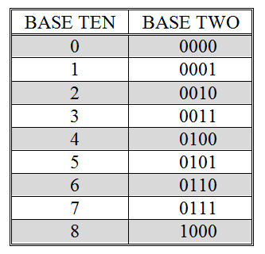
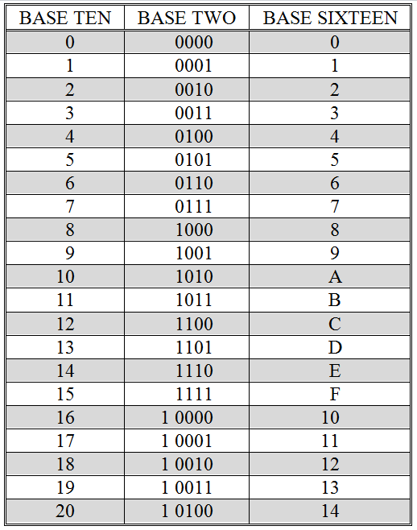

Today, virtually all civilizations use a base ten counting system. However, this has not always been so. In primitive tally systems, for example, there is one stroke for each object being counted, as in |||| |||| || to represent twelve. Some tally systems group strokes together – the one illustrated places five strokes in each group.
Most early systems attached little or no meaning to the order of the symbols used to represent a number. Roman numerals did use position, but only to indicate whether one value should be added to or subtracted from another value. For example, the Roman numeral MMC stands for 2100 because “M” represents one thousand, “C” represents one hundred, and the positional rule states that when the symbols are arranged in order of decreasing value, all of the values should be added together. Hence, the meaning of MMC is 1000 + 1000 + 100 = 2100. On the other hand, MCM means 1900 because the positional rules states that when a symbol for a smaller value immediately precedes a symbol for a larger value, the smaller value is to be subtracted from the larger value. So, MCM is 1000 + (1000 – 100) = 1900. The year 1999 as a Roman numeral is written MCMXCIX, meaning 1000 + (1000 – 100) + (100 – 10) + (10 – 1).
Positional notation truly became useful only after the zero digit was introduced by the Arabs. Our modern decimal number system is a base ten positional system. It uses ten symbols, “0” through “9”. We count by sequencing through these symbols: “0” for zero, “1” for one, “2” for two, …, and “9” for nine. Once the last symbol is encountered, namely “9”, how do we represent the next number? What we do is to replace the current symbol, “9”, with the first symbol in the series, “0”, and then increment the symbol immediately to the left of the current symbol by one. Since base ten numbers are assumed to be preceded by (usually unwritten) 0’s, the number nine can be written as “09”. Hence, cycling “9” back to “0” and incrementing the leftmost “0” to “1” gives “10” as the base ten symbol for the number ten. To continue counting, we cycle the rightmost digit through the symbols “0” through “9” again, producing “10” through “19” for the numbers ten through nineteen. The number twenty can be represented by resetting the “9” to “0” and replacing the “1” with the next symbol in the sequence, “2”, giving “20”.
Computer systems use base two, or binary, instead of base ten. Counting in binary is similar to counting in base ten. We still cycle through the sequence of symbols – incrementing the symbol to the left of the current symbol whenever the current symbol cycles back to the beginning of the sequence. The only difference is that instead of ten symbols, “0” through “9”, there are only two symbols: “0” and “1”. We begin counting by sequencing through these symbols: “0” for zero, “1” for one, and then we have reached the symbol with the largest value. Keeping in mind that the number one can be rewritten as “01”, we reset the rightmost symbol, “1”, to the first symbol in the sequence, “0”, and then increment the implied “0” immediately to the left to “1”, giving us “10”, the base two symbol for two.
Note carefully that the symbol “10” (pronounced “one” “zero”) when interpreted as a base two number refers to the number two, not ten. When discussing base two values you should never refer to the symbol “10” as “ten”, since that is not the value of the number represented by this symbol.
Continuing with the example, the next number, three, can be represented in base two as “11” – we simply increment the right-most digit of “10” from “0” to “1”.
The numbers zero through eight in base ten and base two
To generate the base two representation of four, we begin with three represented as “011” – remember it is ok to add 0’s to the left-hand side of a number symbol. Next, we set the rightmost “1” digit back to “0” and attempt to increment the middle digit. However, that digit is also at the end of the sequence, since it contains a “1”. So, we reset this digit to “0” as well and proceed to the third (leftmost) digit, which we increment from “0” to “1”. The final result is “100”, which is the base two representation of the number four.
This process for generating base two numbers can be continued indefinitely. The base ten (decimal) and base two (binary) representations of the numbers zero through eight are shown in . In order to make the counting algorithm as clear as possible, leading 0’s are shown in the binary representations of zero through seven.
Of course, we will need to develop a fast way to find out the number represented by a base two symbol, instead of “counting up to it”. However, before we leave the notion of counting, let’s investigate one other base that is commonly used when discussing programs and data at the machine level.
The numbers zero through twenty in base ten, two, and sixteen
Base sixteen, or hexadecimal, uses sixteen symbols: “0” through “9” for the numbers zero through nine, and “A” through “F” for the numbers ten through fifteen. The number sixteen is written as “10” in base sixteen, since after the symbol “F” is encountered, it is necessary to cycle back to the beginning of the sequence, “0”. When this occurs, the character immediately to the left of the current character (an understood “0”) is incremented to “1”, giving “10”. illustrates the base ten, base two, and base sixteen representations of the numbers zero through twenty.
In order to clearly distinguish which base a number-symbol is to be interpreted under, I will generally write the base: two, ten, or sixteen, as a subscript immediately following the digits of the number. Hence, 11two is three, 11ten is eleven, and 11sixteen is seventeen.
Exercises for